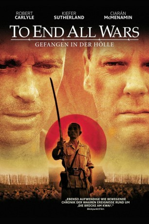

#11106 Gefangen in der Hölle
Alternativ: To End All Wars (Englischer Titel)
 
 IMDB-Wertung: 7.1 / 10
IMDB-Wertung: 7.1 / 10  Metascore: 0
Metascore: 0 
Während des Zweiten Weltkriegs erobern die Japaner Singapur und nehmen eine Gruppe Alliierter gefangen. In einem Kriegsgefangenenlager mitten im thailändischen Dschungel erwartet die Soldaten die Hölle auf Erden. Unter unmenschlichen Bedingungen werden sie gezwungen, eine Bahnlinie zu bauen. Eine Flucht durch den gefährlichen Dschungel scheint hoffnungslos. Doch während sich die einen ihrem Schicksal fügen, lehnen sich andere gegen das brutale Regime auf. Der packende Antikriegsfilm mit Kiefer Sutherland und Robert Carlyle erzählt die wahre Geschichte des ehemaligen Kriegsgefangenen Ernest Gordon, der seine traumatischen Erlebnisse in dem Buch ‘Im Tal des Kwai’ verarbeitete. Besonders bewegend ist das Zusammentreffen Gordons mit dem japanische Aufseher Takashi Nagase 55 Jahre nach Ende des Krieges auf dem Friedhof der ‘Bahnstrecke des Todes’ am Ende des Films.
Jahr: 2001
Dauer: 117 Minuten
FSK: 16
Land: USA Studio: Argyll Film PartnersTonspuren:
Untertitel:
Auflösung: 720p (1280x720) Größe: 4474 MB
Genre: Action, Drama, Krieg
Regisseur: David L. Cunningham
Drehbuch: Ernest Gordon, Brian Godawa
Soundtrack: John Cameron
Darsteller:
- Ciarán McMenamin als Capt. Ernest 'Ernie' Gordon
 Robert Carlyle als Maj. Ian Campbell
Robert Carlyle als Maj. Ian Campbell Kiefer Sutherland als Lt. Jim 'Yankee' Reardon
Kiefer Sutherland als Lt. Jim 'Yankee' Reardon Mark Strong als Dusty Miller
Mark Strong als Dusty Miller- Yûgo Sasô als Takashi Nagase
- Sakae Kimura als Sgt. Ito
 James Cosmo als Lt. Col. Stuart McLean
James Cosmo als Lt. Col. Stuart McLean- Greg Ellis als Sgt. Roger Primrose
 Pip Torrens als Lt. Foxworth
Pip Torrens als Lt. Foxworth- Brendan Cowell als Wallace Hamilton
- Adam Sinclair als John
- Sergio Jones als Irishman
- Joji Yoshida als Guard #1
- Masa Kanome als Soldier (uncredited)
 Teddy Sears als Paratrooper (uncredited)
Teddy Sears als Paratrooper (uncredited)- Masayuki Yui als Capt. Noguchi
- John Gregg als Camp Doctor Coates
- Shû Nakajima als Nagatomo
- James McCarthy als Norman
- Winton Nicholson als Duncan
- Tracy Anderson als Crazy Man
- Duff Armour als Jan
- Robert Jobe als Lars
- Jeremy Pippin als Young Dutch Soldier
- Christopher Gyre als Cockney
- Kelli Walchek als Scottish Mother
- Jonathan Chapman als Server
- Robert Lee als Captain Paratrooper
- Richard Joseph Lafond Jr. als American Soldier
- Ben Huddleston als Young Scot
- Daryl Bonilla als POW
- Clyde Yamashita als Japanese NCO
- Koji Haga als Guard #2
- Ernest Gordon als Himself (uncredited)
- Nick Meaney als (uncredited)
- Takashi Nagase als Himself (uncredited)
Datei: X:\2001\Gefangen in der Hölle (2001, FSK16, 1280x720).mkv seit 24.04.2019
Festplatte: Gemischt-01+Anime
 Es gibt insgesamt 102 Filme in der Gruppe '2001'
Es gibt insgesamt 102 Filme in der Gruppe '2001'